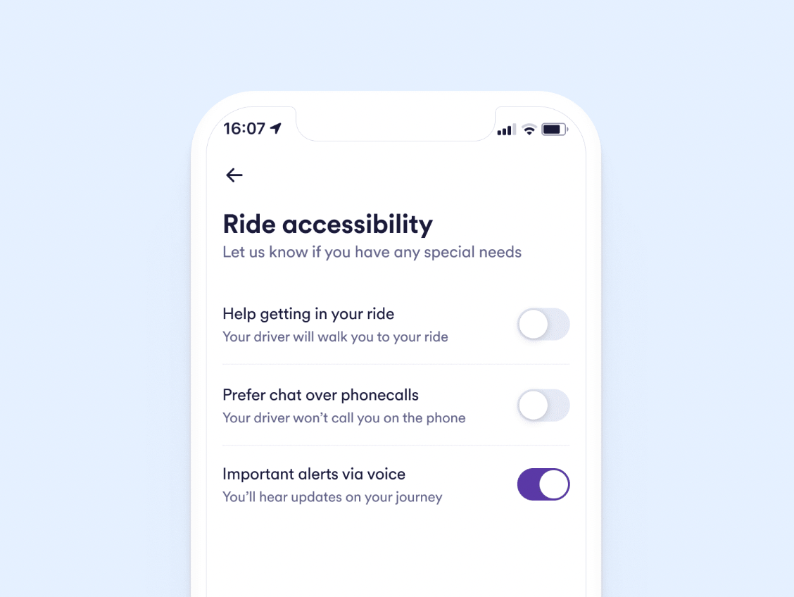

Câu chuyện bởi:
Ioanna Lykiardopoulou
Theo WHO , người khuyết tật chiếm 16% dân số thế giới. Họ cũng thấy việc đi lại khó khăn hơn gấp 15 lần so với những người không bị khuyết tật. Nhưng để tính di động thực sự bền vững, nó phải vượt ra ngoài việc giảm lượng khí thải; nó phải được bao gồm và phục vụ cho mọi thành viên của xã hội.
Cuối cùng, công nghệ đại diện cho một ngọn hải đăng hy vọng cũng như một công cụ vô giá. Để tìm hiểu thêm về vai trò của nó trong việc hỗ trợ phương tiện giao thông có thể tiếp cận trên toàn cầu, tôi đã nói chuyện với Jonathan Chacón Barbero, Kỹ sư phần mềm trợ năng cao cấp tại Cabify .
Chacón Barbero đã tham gia mở rộng quy mô gọi xe vào năm 2019 và là người đứng sau menu hỗ trợ tiếp cận của ứng dụng . Ông đã có nhiều năm làm việc trong lĩnh vực thiết kế và phát triển các ứng dụng có thể truy cập, đồng thời làm việc với tư cách là nhà tư vấn và giảng viên về khả năng truy cập. Ông cũng là một trong số ít kỹ sư phần mềm mù ở châu Âu.
Chacón Barbero nói: “Lần đầu tiên tôi có một chiếc máy tính cá nhân khi còn nhỏ, đó là tình yêu sét đánh. “Đó là lúc tôi quyết định mình muốn trở thành một nhà khoa học máy tính.” Năm 5 tuổi, anh ấy đã xây dựng chương trình phần mềm đầu tiên của mình và khi 9 tuổi, anh ấy quyết định tập trung vào phần cứng.
Chacón Barbero có thể nhìn bằng mắt phải cho đến năm 15 tuổi, lúc đó ông mất hoàn toàn thị lực, thay vào đó, ông phải làm việc trên phần mềm.
Anh nhớ lại: “Khoảnh khắc tồi tệ nhất trong cuộc đời tôi là khi tôi bị mù và tôi phải không tiếp xúc với công nghệ trong ba tháng. “Tôi không biết chữ nổi. Tôi không hiểu máy tính cho người mù. Tôi đã không biết gì về thế giới mù quáng. Tôi phải hiểu và nghiên cứu mọi thứ. Tôi nghĩ tại thời điểm đó, tôi đã quyết tâm cho phần còn lại của cuộc đời mình.”
Anh ấy nhấn mạnh rằng kể từ thời điểm này trở đi, công nghệ có ý nghĩa kép trong cuộc đời anh ấy: nó không chỉ là niềm đam mê mà còn là công cụ để giải quyết những thách thức liên quan đến tình trạng của anh ấy.
Ông nói thêm: “Công nghệ giúp chúng tôi vượt qua giới hạn của mình. và đó là những gì anh ấy bắt đầu làm.
Rào cản tiếp cận và tác động
Những thách thức về giao thông mà người khuyết tật phải đối mặt vượt xa việc thiếu đường dốc tiếp cận. Trong số những thứ khác, chúng bao gồm các phương tiện không thể tiếp cận; lề đường, lối băng qua đường và vỉa hè được thiết kế kém; và biển báo không tồn tại hoặc không thể tiếp cận, thông tin tìm đường và lập kế hoạch hành trình.
Hơn nữa, các nghiên cứu đã chỉ ra rằng các rào cản xã hội và cơ sở hạ tầng khiến các phương tiện giao thông cụ thể không khả dụng cho khách du lịch khuyết tật và tăng thời gian hành trình. Do đó, người khuyết tật thực hiện ít chuyến đi hơn và di chuyển quãng đường ngắn hơn.
Chẳng hạn, tại Vương quốc Anh, một cuộc khảo sát năm 2022 cho thấy cứ năm người khuyết tật thì có một người không thể đi lại do thiếu các phương tiện giao thông phù hợp, trong khi một phần tư cho biết thái độ tiêu cực từ những hành khách khác đã ngăn cản họ sử dụng phương tiện giao thông công cộng. Chacón Barbero chia sẻ một ví dụ từ kinh nghiệm sử dụng dịch vụ taxi của anh ấy.
“Tôi phải gọi một hãng taxi. Tôi giữ cuộc gọi khi tôi đang đợi tài xế đến. Nhưng có một vấn đề: anh ấy không biết rằng tôi không thể nhìn thấy chiếc xe và tôi không thể biết chiếc xe ở đâu. Tôi lãng phí thời gian và tiền bạc vì không có sự giao tiếp trực tiếp giữa tài xế và người dùng.”
Đưa công nghệ vào công việc
Một cách lạc quan, trong vài năm qua đã chứng kiến ngày càng nhiều sáng kiến của cả nhà nước và tư nhân sử dụng các công nghệ mới để vượt qua thách thức về khả năng tiếp cận phổ cập.
Chẳng hạn, thành phố Lyon đã phát triển một ứng dụng giao thông công cộng sử dụng dữ liệu thời gian thực để hỗ trợ những người khuyết tật đi lại, bao gồm một tính năng giúp họ xác định hành trình dễ tiếp cận nhất và các tuyến đường ngắn nhất. Các công ty khởi nghiệp châu Âu cũng đang hoạt động tích cực trong lĩnh vực này. Hãy nghĩ đến Wayfindr có trụ sở tại Luân Đôn , giúp những người khiếm thị đi du lịch độc lập bằng điều hướng âm thanh. Hoặc Noteabox có Ứng dụng nút cho phép người dùng nhấn các nút — chẳng hạn như các nút trên đường dành cho người đi bộ — thông qua điện thoại thông minh của họ.
Cabify trình bày một ví dụ khác về cách công nghệ có thể tăng cường tính toàn diện trong các dịch vụ gọi xe. Khi Chacón Barbero tham gia mở rộng quy mô ở Tây Ban Nha, bước đầu tiên của anh ấy là xây dựng nền tảng ngữ nghĩa cho giao diện kỹ thuật số của ứng dụng để cho phép bổ sung dần dần nhiều tính năng trợ năng và hồ sơ khuyết tật. Trong cùng năm đó, ứng dụng của Cabify đã có thể truy cập được 100% đối với người mù.
Vào năm 2020, công ty đã ra mắt menu trợ năng. Kể từ đó, nó đã bổ sung thêm các chức năng và mở rộng các nhóm đối tượng của mình, chẳng hạn như người khiếm thính, người khuyết tật về nhận thức và người già. Chacón Barbero cho biết: “Chúng tôi đã tạo một menu đặc biệt dành cho khả năng truy cập trong hành trình của mình để cung cấp cho người dùng khả năng xác định các nhu cầu đặc biệt của họ.
Người dùng có thể chọn giữa ba tùy chọn được hiển thị trong hình bên dưới:
